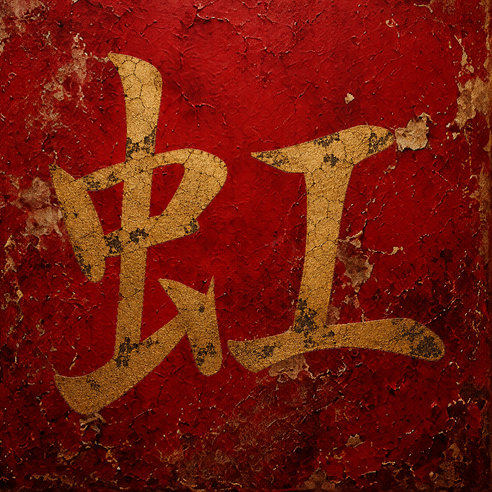

増 increase

石の水盤に 水が少しずつ満ち
静かな溢れが 夜を深くしていた
Water slowly filled the stone basin,
and the gentle overflow deepened the night.
On: ゾウ ・ Kun: ま-す
増
Printed
増
Written
土
曽

💡 Tip: Click the featured kanji to view stroke order animations
古い鏡に 香の煙が漂い
忘れられた時が 静かに残っていた
Incense drifted across the old mirror,
and forgotten time remained in silence.
石の水盤に 水が少しずつ満ち
静かな溢れが 夜を深くしていた
Water slowly filled the stone basin,
and the gentle overflow deepened the night.
折り重ねた布が 静かに差し出され
言葉より先に 心が届いていた
Folded cloth was offered quietly,
and the heart arrived before words.
障子の向こうに 淡い朝が広がり
東の光が 長い廊下を満たしていた
Pale morning spread beyond the shoji,
and eastern light filled the long corridor.
冬の空気の中で 古い棟木が伸び
静かな屋根が 空を支えていた
In the winter air, the old ridgepole rose,
and the quiet roof supported the sky.

凍った水盤に 薄い氷が広がり
冷たい静寂が 石に染み込んでいた
Thin ice spread across the frozen basin,
and cold silence soaked into the stone.

障子の向こうで 両手が静かに重なり
小さな命が 灯りの中で眠っていた
Behind the shoji, quiet hands rested together,
and a small life slept within the light.
長い広間に 足音だけが響き
遠い権威が 静かに座っていた
Only footsteps echoed through the long hall,
and distant authority sat in silence.

藍の水に 布がゆっくり沈み
深い色が 指先に残っていた
Cloth slowly sank into indigo water,
and deep color remained upon the fingertips.

暗い部屋で 炭が静かに赤く燃え
小さな熱だけが 夜を守っていた
In the dark room, charcoal glowed softly red,
and only a small warmth guarded the night.
濡れた石道に 迎えの灯りが並び
静かな客人が 奥へ迎えられていた
Welcoming lanterns lined the wet stone path,
and the quiet guest was led within.

雪の向こうで 除夜の鐘が響き
過ぎた一年が 静かに沈んでいった
Beyond the snow, the year-end bell echoed,
and the passing year slowly sank away.

霧の谷の下に 小さな町が広がり
遠い景色が 静かに呼吸していた
Below the misted valley, a small town spread outward,
and the distant landscape breathed quietly.

山の雨に 栃の葉が濡れ
深い森だけが 静かに残っていた
Horse chestnut leaves glistened in mountain rain,
and only the deep forest remained.

濡れた土と 石道が続き
足元の静けさが 世界を支えていた
Wet earth and stone pathway continued onward,
and the silence beneath supported the world.

静かな池に 淡い空が映り
浮かぶ葉だけが 時を動かしていた
The pale sky reflected upon the quiet pond,
and only floating leaves moved time forward.
暗い草の間で 小さな命が動き
露の光だけが 静かに揺れていた
Among the dark grass, tiny life stirred,
and only dew-light trembled softly.

深い川辺に 蛍の灯が浮かび
青黒い夜が 静かに呼吸していた
Firefly lights floated along the dark riverside,
and the blue-black night breathed softly.
濡れた石の上で 蛇が静かに身を巻き
森の気配だけが 雨に残っていた
Upon the wet stone, the serpent coiled quietly,
and only the forest's presence remained in the rain.

雨上がりの霧に 淡い虹が現れ
静かな水面が 空を映していた
Within the mist after rain, a pale rainbow appeared,
and the quiet water reflected the sky.